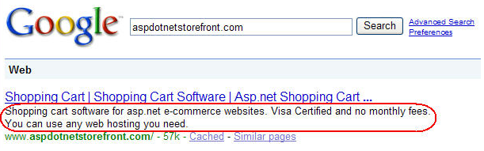
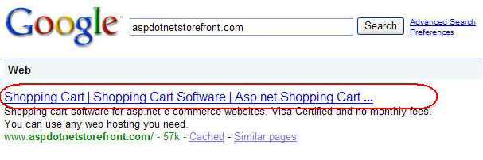
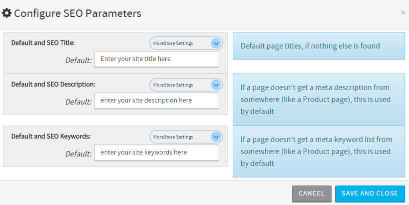
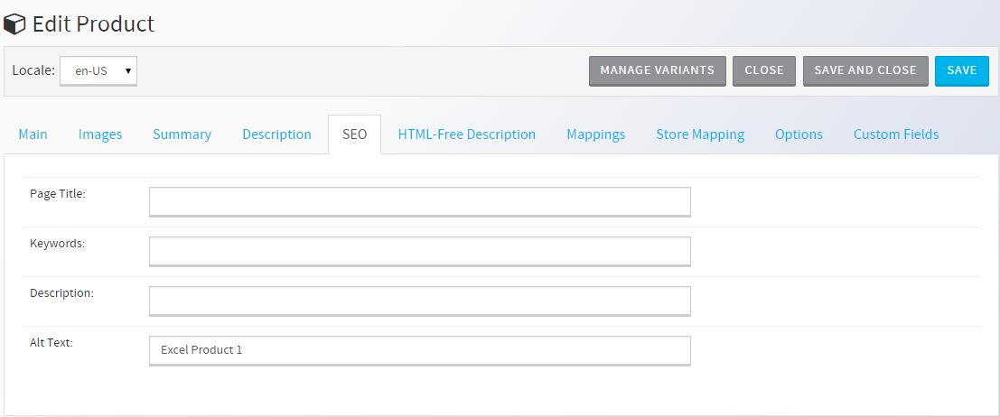
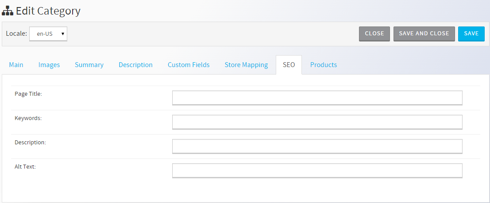
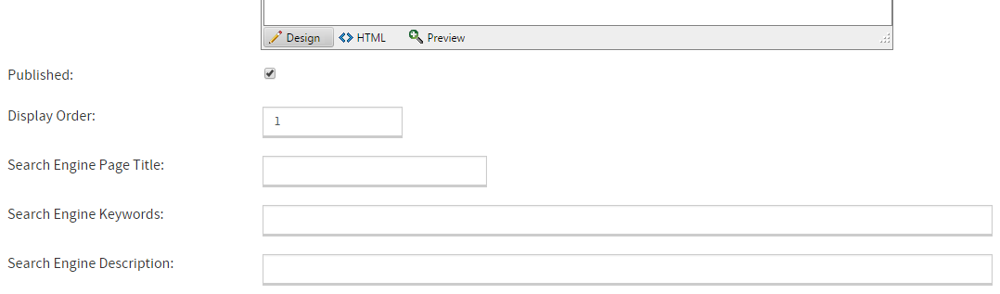
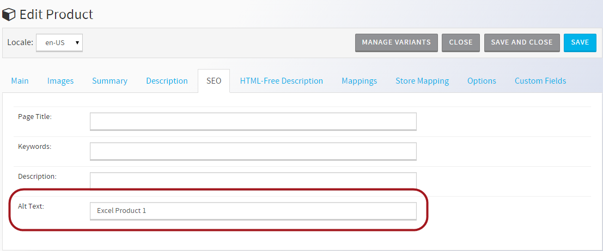

SEO stands for Search Engine Optimization, which is the study of ways to increase search engine traffic to a site in order to increase that site's search engine rank (how high it appears in search results). Most people find sites through search engines, so high search engine rank is vitally important to e-commerce sites. AspDotNetStorefront provides built in functionality that will help you optimize your site for better Search Engine rankings. Additional tools such as 301 Redirects, XML Sitemaps and FAQ/Q & A will help. See a complete list here.
SEO experts generally focus their efforts on increasing ranking on Google and Yahoo search results, as those 2 search engines account for the vast majority of Internet searches - around 75% of all searches between them (with Google making up around 50% on its own).
When a person performs a search on one of these (or other) search engines, the search is not actually looking through live websites in real-time. Instead, the search engine checks its internal indexes, which contain a list of keywords they have found on the Internet, and where they found them.
How are Sites Indexed?
How, then, are these lists created? Search engines use programs called web crawlers (also called bots, worms, spiders, etc) to browse the web in a methodical, automated manner. Each crawler starts with a list of URLs to visit, called "seeds'. As the crawler visits these seed sites, it identifies all of the links leading from those pages to other pages, and adds them to the list of sites to visit. Those new URLs are then visited and the new link there are added to the list, and so on.
The sites that these crawlers visit are indexed, according to complex internal algorithms. Each search engine has its own proprietary algorithm that is not known precisely by the public, but there are some methods of increasing page rank that are well-established and reliable. Information on some of those concepts and how AspDotNetStorefront software assists with them is found below.
NOTE: There are many SEO concepts that have no bearing on the software being used, and the concepts discussed below can be much more complex than described herein. This guide covers these ideas at a basic level and only as they relate to the software. Store admins may wish to work with an SEO firm to increase their success in this very complex area. AspDotNetStorefront recommends Online Marketing Partners.
While most pages on an AspDotNetStorefront site are dynamically generated, the application (in v10) offers "modern URLs" that take the format of yourdomain.com/category/16/racingbikes or yourdomain.com/product/3/mountainbike
These 'modern URLs' are descriptive, easy for the shopper to remember and perfect for SEO since they largely contain your SEO keywords.
If you are moving from an earlier version of AspDotNetStorefront and have been indexing 'legacy URLs', then there is a great option where AspDotNetStorefront moves you to modern URLs but elegantly converts your old page references, too.
Meta Tags
Meta tags are information inserted into the 'head' section of web pages. With the exception of the Title tag (see below), these tags contain information that site visitors don't see and probably aren't interested in - such as what character set to use, whether a page is self-rated as containing adult content, etc.
Description and Keywords
These tags can also be used for a page description and to list page keywords. Historically these 2 tags were very important in boosting page rank, but because of overuse, search engines do not rely on these tags very much anymore. That said, they are still important as the contents of those tags are often displayed on search engine results pages:

Title
The title tag isn't really a meta tag, but it functions like one. The contents of that tag are seen by customers at the top of the browser and are used for the default name given to a page when adding it to the browser bookmarks. That tile is also displayed on search engine results pages:

How Does AspDotNetStorefront Help?
Every page in the AspDotNetStorefront software can be given a title, meta description, and keywords. You have the option of either setting up unique meta information for every product, entity, and topic page, or of setting default meta values that will be used across the site.
To set that default information, go to the Site Setup Wizard, and click the Configure SEO link. Enter the values you want to use for your store-wide meta information, then click Save and Close.

If that is all you do, then every page will use the values you entered above (with the exception of titles, which are taken from product/entity names by default). If, however, you'd like to customize the meta information for each page, those tags can be set individually as shown below:
Defaults
The software has rules for what title information to set if none is entered by the store admin (see below for how to customize what is used instead). The defaults are:
Product pages use the store name (set in the StoreName Setting) plus the product name
Entity pages use the store name plus the entity name
Topic pages use the topic name
Product Pages
Each product can have its own meta information, which is entered on the SEO tab in Products > Manage Products:

Entities
Like products, entities/product groups get their own meta information from the data in the SEO tab:

Topics
Topic pages can have their own meta information as well:

Image Alt Text
Alt text is text that can be set on images which will be displayed when the images cannot be viewed for whatever reason - a broken link, missing file, browser error, etc. Alt text can also tell search engines what an image is about, since web crawlers cannot see images.
An added non-SEO benefit is that alt text is often used by software designed to assist handicapped visitors (such as software that can read a website's content aloud), so it benefits potential customers.
How Does AspDotNetStorefront Help?
Every product and entity image can be given its own unique alt text. Simply add the text on the SEO tab in Products > Manage Products:

Duplicate Content
When a search engine finds multiple copies of the same content, it will attempt to pick the "best" page from the bunch and then down-rank the other copies. If a site has too much duplicate content, the entire site may be penalized in search rank.
How Does AspDotNetStorefront Help?
Many CMS/ecommerce applications have a tendency to create multiple URLs that contain the same content, especially on sites with a lot of dynamically generated content. AspDotNetStorefront's URL rewrite rules ensure that each product, entity and topic page has a single unique URL regardless of how the page is reached.
Site Depth and Unreachable Pages
Site Depth
Site depth is a measure of how many 'clicks' it can take to get from your home page to any one page on your site. Search engines do not always 'dig deep'. If a page is more than 2 or 3 links from your home page, search engines may not index that page.
Unreachable Pages
Large sites can sometimes end up with pages that are not linked to from anywhere else on the site by mistake. Because there are no links for web crawlers to go through to reach them, those pages will never be indexed, and your site visitors may miss out on important information.
How Does AspDotNetStorefront Help?
The sitemap feature can prevent both of these issues from becoming a problem on your site. The sitemap contains links to every page on the site - products, entities, topics, etc. The default storefront skin places a link to the sitemap in the footer of every page on the site (and this is easily done in custom skins as well). With a link to the sitemap on every page, a web crawler is never more than 2 clicks away from any page and no page is unreachable.
The AspDotNetStorefront software also has the ability to generate XML sitemaps. These XML files can be submitted to the larger search engines (through special pages they maintain) to keep them updated of changes on your site. These sitemaps can help get your site indexed more frequently, and ensure that search engines are aware of all the pages on your site.
Please see the pages on the built-in sitemap and Google/Yahoo Sitemaps within the relevant product manuals on this site for more information about sitemaps and how to submit them to search engines.
Page Rank
Page rank is a complex algorithm developed by Stanford University and used by Google to assign a numeric value to pages within a given set of hyperlinks. This value is used to determine the relative importance of the various pages within the set.
To quote Google: "PageRank relies on the uniquely democratic nature of the web by using its vast link structure as an indicator of an individual page's value. In essence, Google interprets a link from page A to page B as a vote, by page A, for page B. But, Google looks at more than the sheer volume of votes, or links a page receives; it also analyzes the page that casts the vote. Votes cast by pages that are themselves "important" weigh more heavily and help to make other pages "important"."
In other words, the more links to your site from other high-quality sites, the higher your page rank will be and the closer to the top of search results your site will be.
How Does AspDotNetStorefront Help?
While much of page rank is determined by factors outside of the software's control, the affiliate features can be used to work with other sites to increase traffic to your site and reward referrers. Bear in mind that while generally speaking, the more inbound links you have the better, Google does judge the 'quality' of those links. Using linking services or 'spamming' links to your site inappropriately can actually damage your page rank.
Please see this page for more information on affiliates.


 Email This Article
Email This Article Previous Article
Previous Article Next Article
Next Article